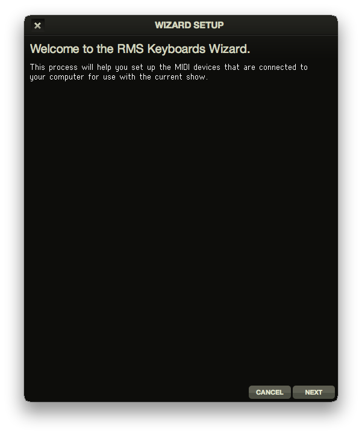
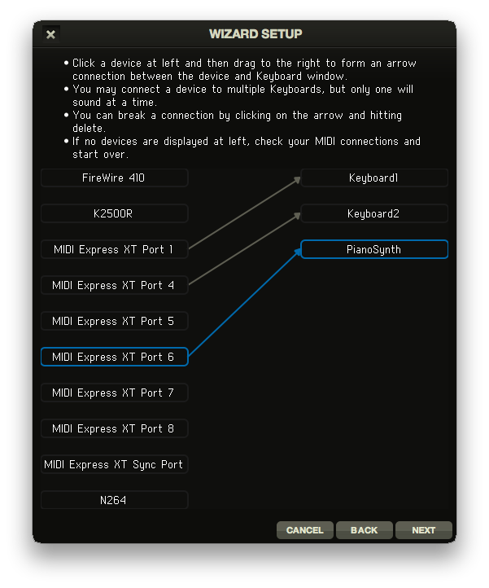
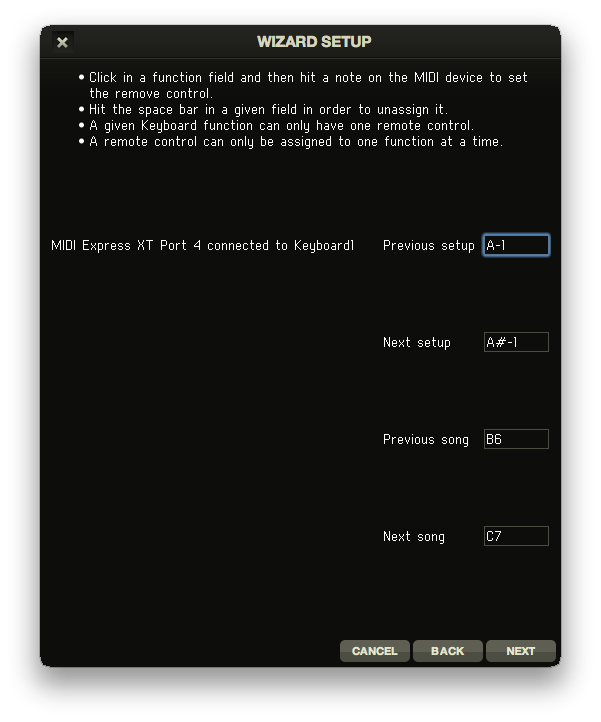
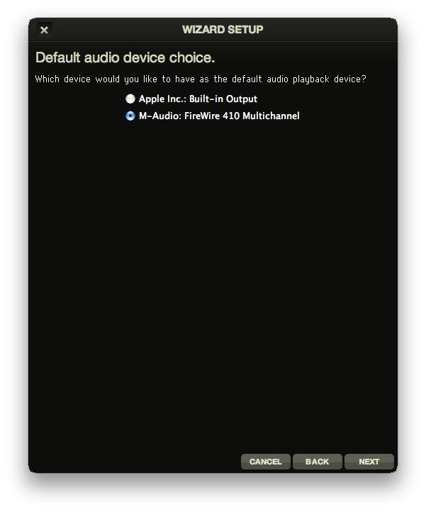

Setup
Setting up RMS Keyboards® is a very simple process. With your MIDI-enabled keyboard(s) connected to your computer, select ‘Run Setup Wizard’ from the File menu. This will configure your computer for use with RMS Keyboards®.
Please note, it is important that you have your MIDI keyboard(s) connected to the computer before you launch RMS Keyboards® for the program to recognize your device!

Configure keyboard input
In live performance, RMS Keyboards® is operated via connected MIDI-enabled keyboards. The specifics of how you connect your keyboard(s) are left up to you, but for suggestions on what you might need, please visit our website at www.rms.biz or visit your local music equipment retailer.
When you run the keyboard input section of the Wizard, you will see two columns of items. The left column is the list of MIDI-enabled devices connected to your machine. The right column is the list of possible instruments that those devices can be connected to. These instruments correspond to the published piano/synthesizer books for your show.

To connect a MIDI device to an instrument, simply click-and-drag to create a link. You should be aware that is possible to connect a single MIDI device to all instruments in RMS Keyboards®. In that situation, only the “active” instrument (indicated by an orange border in the program window) will be triggered by your connected MIDI device.
To remove a connection, simply click on the link so that it is highlighted blue and press Delete on your computer keyboard.
Configure hotkey input
Within a single song, there are often many different sounds called for by the orchestrator. For example, in "Joseph’s Dreams" from JOSEPH AND THE AMAZING TECHNICOLOR DREAMCOAT, the keyboard 1 player has to play harpsichord, Hammond organ, “sharp brass”, a trumpet/trombone split and then back to “sharp brass." Changing between these setups in RMS Keyboards® is done using a hotkey. Hotkeys can be assigned to any key on your MIDI device.
There are hotkeys for the following actions:
- (go to) Previous setup
- (go to) Next setup
- (go to) Previous song
- (go to) Next song
To assign hotkeys within the Wizard, click within the text field for each hotkey and press the desired control on the associated MIDI keyboard or footswitch.

It is also possible to type in the desired key in the text field. For example, if you want middle C (C3) to be assigned to Next song (although this is probably not a good idea!), just click Next song and type C3. Please note: these values follow the American standard, with C3 representing middle C.
Using this technique, you can assign hotkey values outside the playable range of your keyboard. You can then assign certain pedals or buttons on your MIDI keyboard to play those notes and trigger the hotkey. Alternatively, if your footswitch sends common MIDI controller messages (i.e. CC4), this too may be used for hotkey control. Not all MIDI keyboards have this capability, however. Check your documentation.
Configure audio output
The final screen of the Wizard selects which audio interface device you want RMS Keyboards® to utilize. For example, if you have an M-Audio FireWire 410 connected to your computer you would select that device on the setup screen.

It is possible to run sound out of your computer’s default audio device (i.e. the headphone jack on a laptop) but you will have fewer options for routing the sound, as well as decreased quality of sound when compared to an external audio device. For suggestions on what audio hardware you might need, please read our What You Need article or visit your local music equipment retailer.
Power Considerations
PLEASE TAKE CAREFUL NOTE. THIS IS VERY IMPORTANT.
Any computer used in live performance (or other mission critical setting) needs clean, dedicated power. This is absolutely true of RMS Keyboards®.
Failure to provide clean, dedicated power may compromise performance, cause crashes, or even damage your equipment.
Do not, for example, put your computer on a power strip with other electrical devices. Music stand lights, especially ones with dimmers, are notorious for corrupting electrical signal. Please keep these (and any other devices) on a separate power line.
Be aware that it may not be enough just to use an electrical outlet with nothing else plugged into it. If that outlet is on a circuit shared by other devices, you may be in the dangerous position you need to avoid. If you are unsure about your venue's power setup, please speak to your theatre's electrician or technical director.